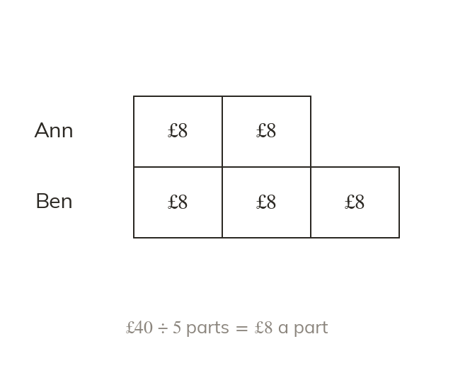

Parts and shares
A ratio shares a total into equal parts. Total ÷ number of parts = the value of one part.
A ratio can be read as a total number of equal parts to be shared out. The total divided by the number of parts gives the value of one part.